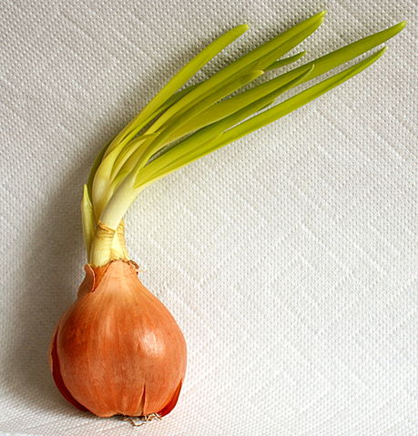

Лук ре́пчатый (лат. Állium cépa) — многолетнее травянистое растение, вид рода Лук
(Allium) семейства Луковые (Alliaceae), широко распространённая овощная культура.
В зелёных листьях лука содержатся сахара, белки, аскорбиновая кислота. В луковицах и
листьях имеется эфирное масло, придающее им специфический запах и острый вкус,
серосодержащие соединения, йод, органические кислоты (яблочная и лимонная), слизи,
пектиновые вещества, гликозиды.